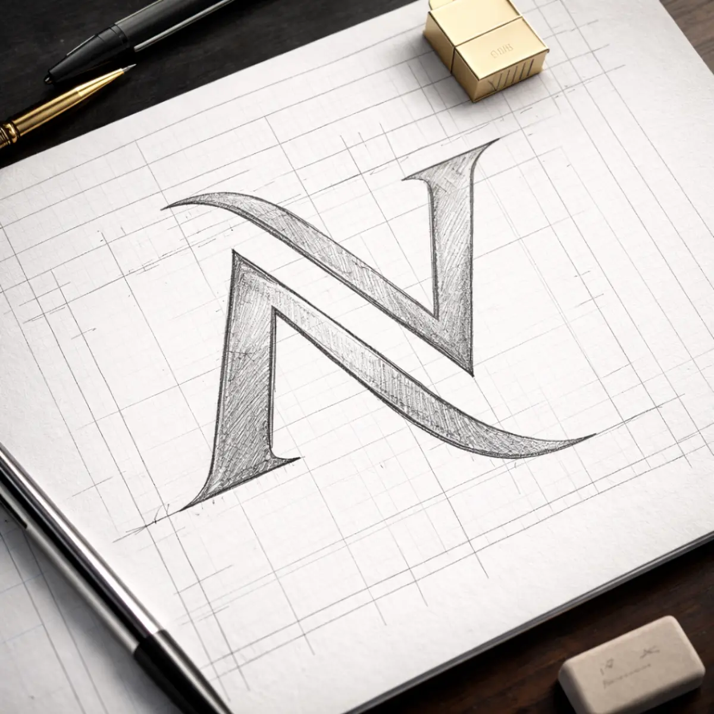
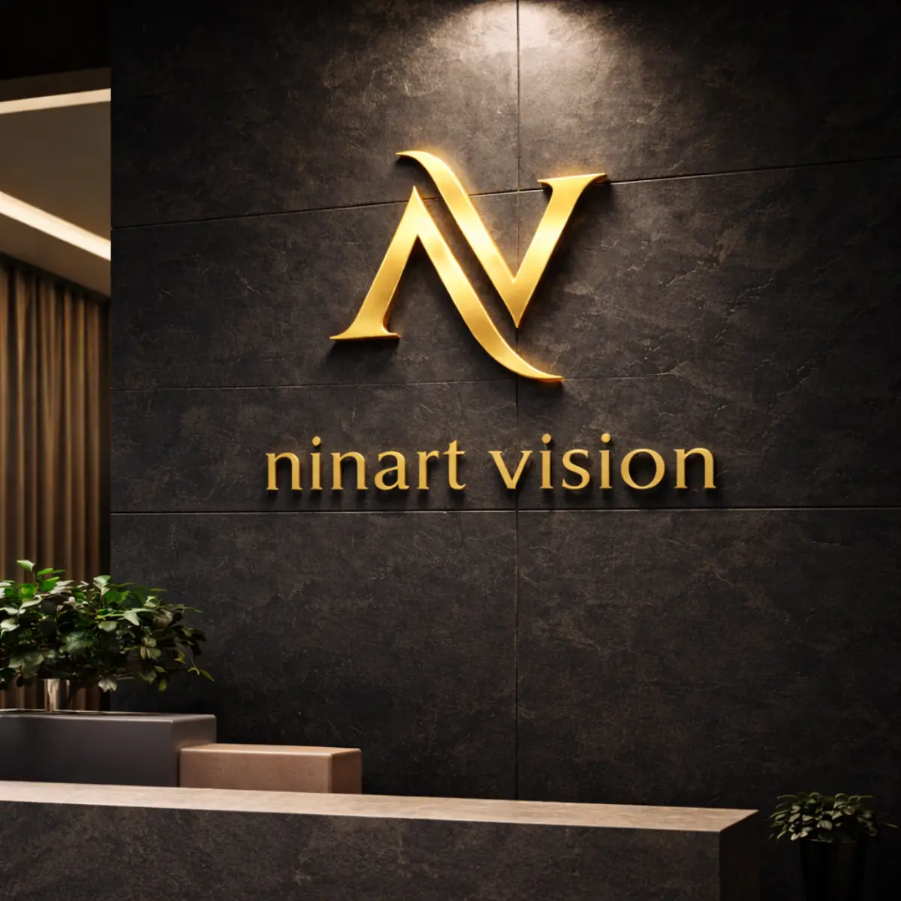
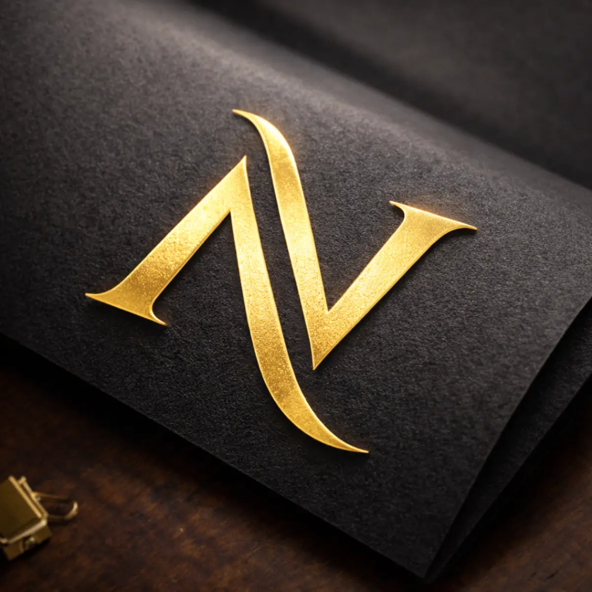
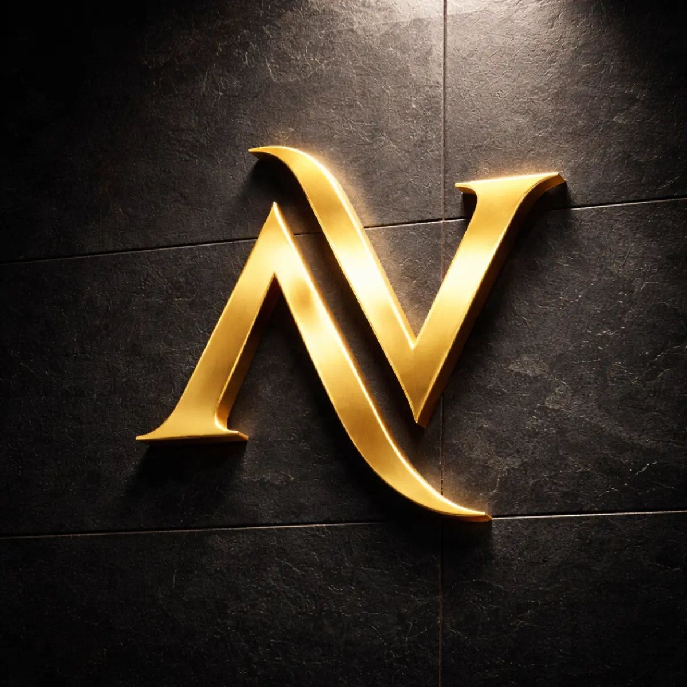
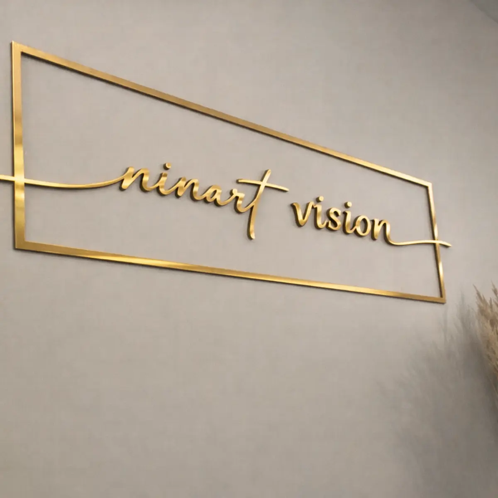

Ninart Vision
Brand Identityკონცეფცია
Ninart Vision-ის ლოგო წარმოადგენს მონოგრამას, სადაც „N“ და „V“ ერთიანდება ერთ ელეგანტურ ფორმაში. ოქროს მეტალის ეფექტი სიმბოლურად ასახავს ხარისხს, დეტალებზე ყურადღებასა და პრემიუმ ვიზუალურ იდენტობას. დიზაინი მინიმალისტურია, მაგრამ ძლიერი ხასიათით — რაც სრულად გამოხატავს ბრენდის ესთეტიკას.
დეტალები
Client: Personal Brand
Year: 2026
Services: Logo, Visual Identity, Mockups





